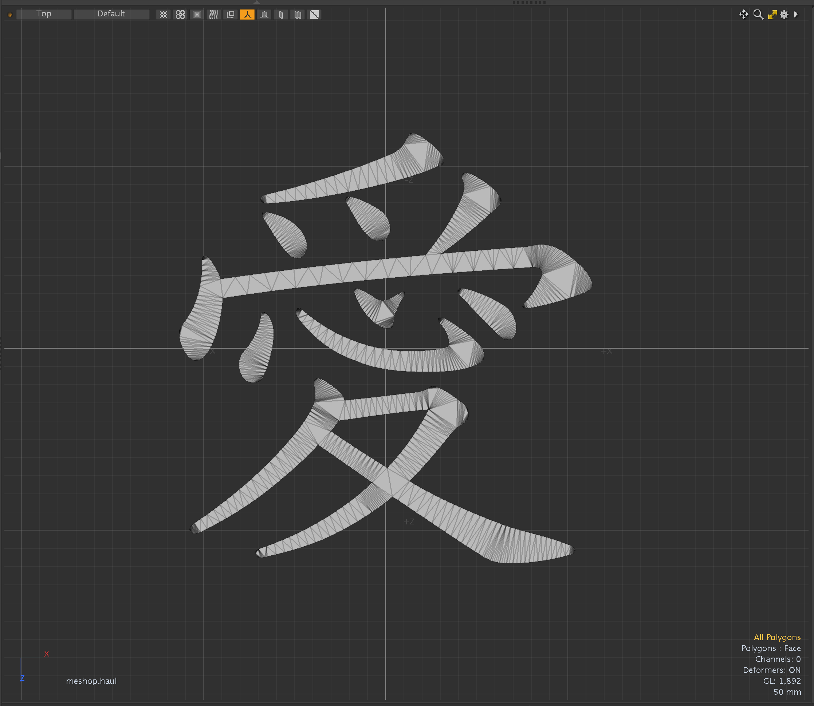
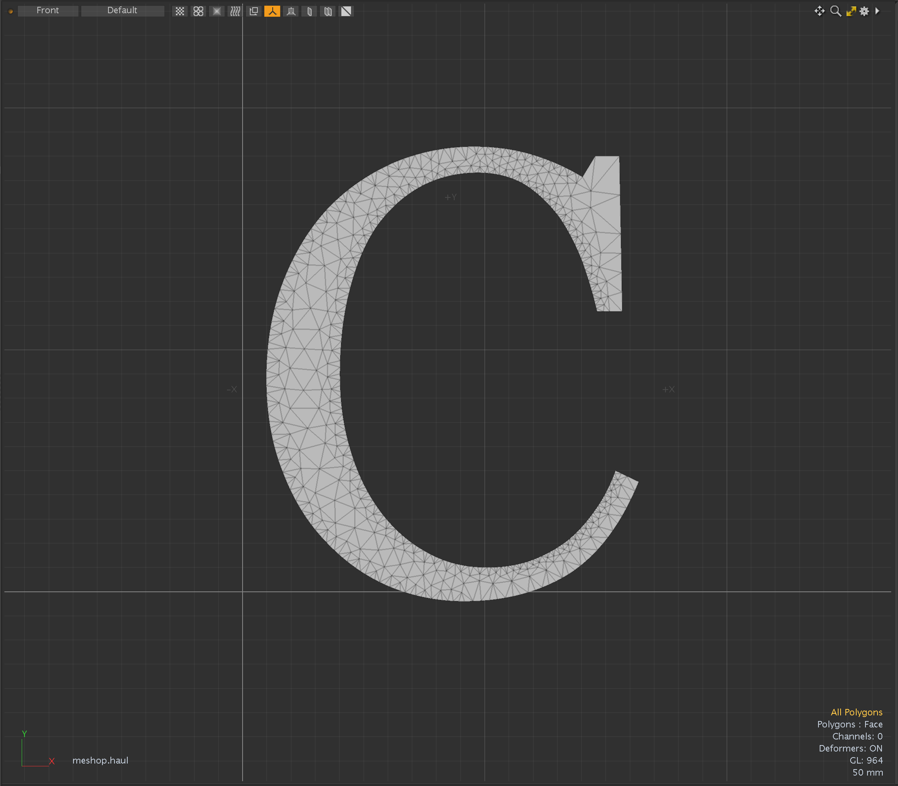
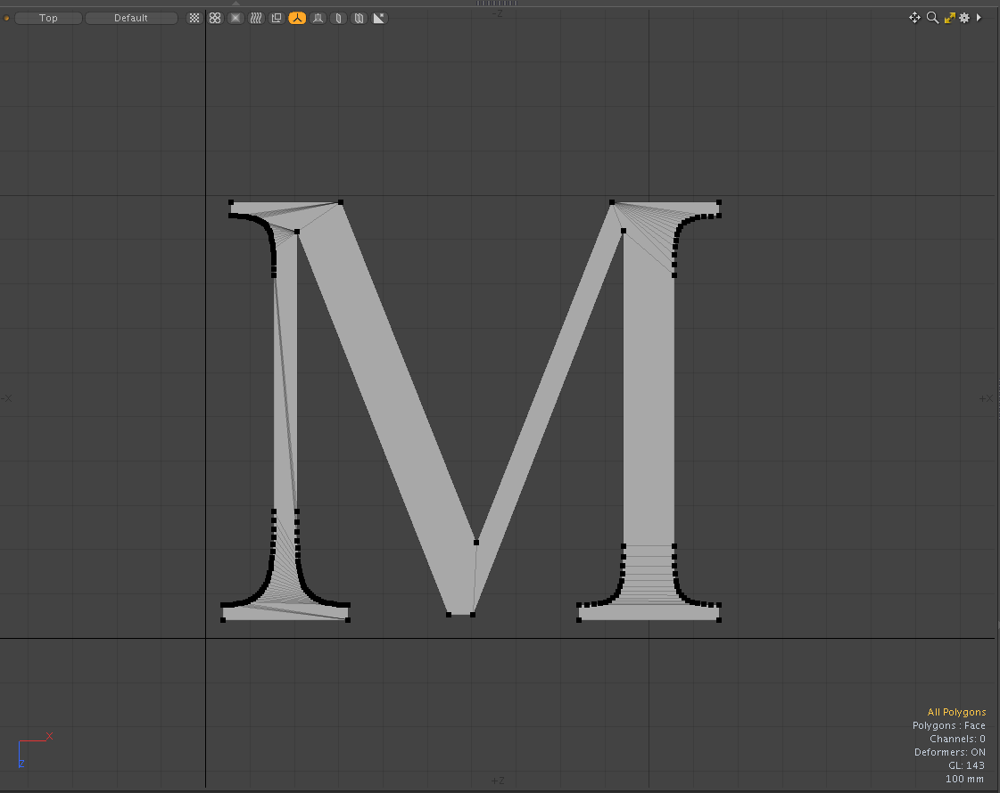
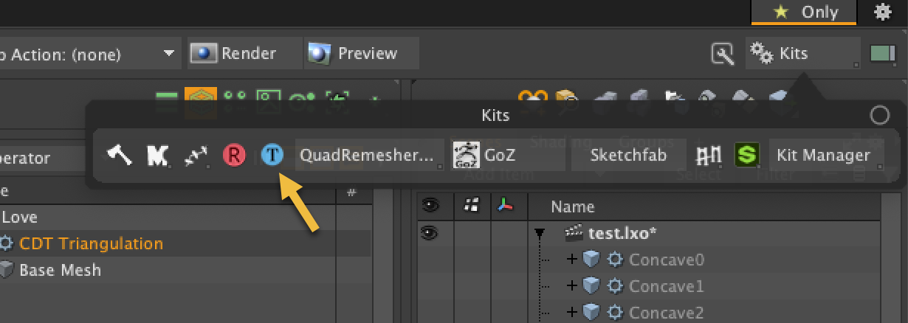

CDT Triangulation for Modo plug-in
This is a Modo Plug-in kit to triangulate polygons using Constraint Delaunay Triangulation algorithm.
This kit contains a command plugin and a procedural mesh operator for macOS and Windows.
This kit is implemented using CGAL libraray.
https://cgal.org



Installing
- Download lpk from releases. Drag and drop into your Modo viewport. If you're upgrading, delete previous version.
How to use the plugins
- The command version of CDT Traingulation can be launched from "Kits" button on Modo UI at right-up. "poly.cdt" command is mapped at "T" button.
- The procedural mesh operator version is available on Mesh Operator viewport. That is categorized in Polygon tab.

Type Option
- Constrained Delaunay Triangulations: force edges into Delaunay triangulation
- Conforming Delaunay Triangulations: add new points into Delaunay triangulation until the edge is present in triangulation
- Convex Partitioning: dived concave polygon into convex polygons. This mode does not support key-hole polygon.
Quad Rule
Quad Rule specifies how to split convex quad polygons.
- Split 1 to 3: Split the quads on their 1st and 3rd vertices
- Split 2 to 4: Split the quads on their 2nd and 4th vertices
- Shortest Diagonal: Split the quads along their shortest diagonal
- Longest Diagonal: Split the quads along their longest diagonal
Maximum Edge Size
How to set the maximum edge size of triangle for the quality of Conforming Delaunay Triangulations
- By Ratio: Related ratio of source polygon size
- By Length: Absolute edge length of triangle
Scale and Size
- Scale: Scale for By Ratio
- Size: Size for By Length
Minumum Angle
The minumum angle of triangle for the quality of Conforming Delaunay Triangulations.
Dependencies
- LXSDK
This kit requires Modo SDK (Modo 16.1v8 or later). Download and build LXSDK and set you LXSDK path to LXSDK_PATH in CMakeLists.txt in triagulate.
- CGAL library 6.0.1 (https://github.com/cgal/cgal)
This also requires CGAL library. Download and CGAL from below and set the include and library path to CMakeLists.txt in triagulate.
- Boost 1.87.0 (https://www.boost.org/)
- GMP 6.3.0 (https://gmplib.org/)
- MPFR 4.2.1 (https://https://www.mpfr.org/)
License
This software is based part on CGAL (The Computational Geometry Algorithms Library):
Licensed under the GPL-3.0 license.
https://cgal.org